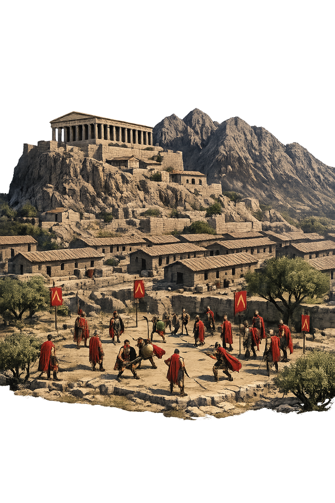

Unicode restoration and ASCII comparison
Σπάρτη
The name in its original Greek form. Spártē (Σπάρτη) is attested in the source tradition — “Sown land (from σπείρω)”. Its long vowels and acute accents carry the full phonetic and orthographic weight of the source tradition.
sparte
Reduced to plain sparte, the name loses everything that made it specific: long vowels and acute accents. What remains is an ASCII string that machines can parse but that no longer speaks with its original voice.
Spártē
The Unicode restoration recovers what ASCII flattened. Spártē restores long vowels and acute accents, returning the name to its original written dignity. The domain encodes to Punycode, but the browser displays the truth.
Spártē.com → xn--sprt-6na61a.com
The non-ASCII characters in Spártē are encoded while the ASCII remains visible. To the DNS, it is Punycode. To humanity, it is Spártē.
How Spártē travels from ancient script to the modern URL
Greek Σπάρτη; from σπείρω “to sow"; the city was said to be sown by the descendants of the Dorians.
Warrior City
The Unicode restoration Spártē preserves Greek stress and length; the ASCII form sparte loses these features.
Owned, ideal, and ASCII forms of Spártē
Spártē
Restores Σπάρτη. The live temple domain — spártē.com.
sparte
Flattens Σπάρτη. The plain ASCII fallback — what DNS and legacy systems see.
How Spártē was spoken
The domain of Spártē
In the greek location tradition, Spártē governed warrior city. The name encodes a sphere of power that shaped ritual, narrative, and social order.
The state upbringing shaped Spartan boys into soldiers through austerity, discipline, and collective endurance.
Two royal lines descended from Heracles ruled jointly, balanced by the gerousia and ephors.
The festival of Apollo and the dead hero Hyacinthus anchored Spartan civic identity in mourning and renewal.
The stand of the Three Hundred made Sparta a byword for collective sacrifice in defense of Greece.
Stories of Spártē
Spártē is the warrior city of the southern Peloponnese, but Greek myth gives it a human namesake as well. Sparta is the daughter of the river-god Eurotas and the wife of Lacedaemon, the son of Zeus; through her, the city receives both its name and its mythic charter. The Spartans themselves traced their institutions back to the legendary lawgiver Lycurgus, who was said to have received their constitution from Delphi.
The city's military ethos left a deep mark on Greek literature. Tyrtaeus of Sparta composed marching songs and elegies that made civic death in battle the highest virtue, while Xenophon's Constitution of the Lacedaemonians marveled at the agoge, the state upbringing that shaped boys into soldiers. For all its austerity, Spartan myth also preserved a strong ritual current: the Gymnopaediae and Hyacinthia drew worshippers from across Laconia and kept Apollo and the dead hero Hyacinthus at the center of civic identity. Sparta's dual kingship, gerousia, and ephorate formed a constitution admired by philosophers from Herodotus to Polybius. Its austere civic ethic produced one of antiquity's most feared armies and one of its most controversial societies. The city's decline after Leuctra did not diminish its symbolic power; Sparta became shorthand for military discipline and civic sacrifice.
The river Eurotas had a daughter named Sparta, beautiful and vigorous. Lacedaemon, son of Zeus and Taygete, came to Laconia and married her, uniting two divine lineages. The land took her name, Sparta, while the wider region was called Lacedaemon after him. Their children, Amyclas and Eurydice, continued the royal line that would eventually produce the twin kingship for which historical Sparta was famous.
This mythic marriage explains why the city and its territory bore different names in Greek usage. 'Sparta' named the city proper, while 'Lacedaemon' named the state and its people. The distinction survived into the classical period, when Spartans called themselves Lacedaemonians and their kings traced descent from Heracles through the Heraclidae, the line of Hyllus.
The Spartans attributed their distinctive customs to Lycurgus, a semi-legendary lawgiver of the eighth or seventh century BCE. Herodotus and Xenophon report that Lycurgus traveled to Delphi and received the oracle's approval for his reforms. The Pythia called him 'more god than man' and commanded the Spartans to obey whatever laws he proposed. From this divine mandate came the agoge, the common messes, the dual kingship, and the gerousia that shaped Spartan life for centuries.
Whether Lycurgus was a historical individual or a symbolic figure, the myth made Sparta's constitution sacred. Its austerity was not mere preference but obedience to Apollo, and its warriors were the guardians of an order sanctified by the same oracle that advised kings and colonists across the Greek world.
When Paris abducted Helen, wife of the Spartan king Menelaus, he turned Sparta into the launching point of the Trojan War. Agamemnon gathered the Greek host at Aulis, but the expedition was justified by the wrong done to Menelaus in his own palace. Menelaus and Helen were buried, in later tradition, at Therapne near Sparta, and their shrine became a place of hero-cult.
The Spartans also claimed the Dioscuri, Castor and Polydeuces, as native sons. These twin horsemen embodied the Spartan ideals of brotherhood and martial excellence, and their star-crowned caps became symbols of the city's divine protectors. Sparta's mythic identity was thus bound to Helen, the Dioscuri, and the war that defined Greek heroic memory.
Names are not merely labels; they are compressed worlds. Spártē carries within it a greek location understanding of sown land (from σπείρω). Unicode restoration returns that world to readable form.
Enter Extended Lore